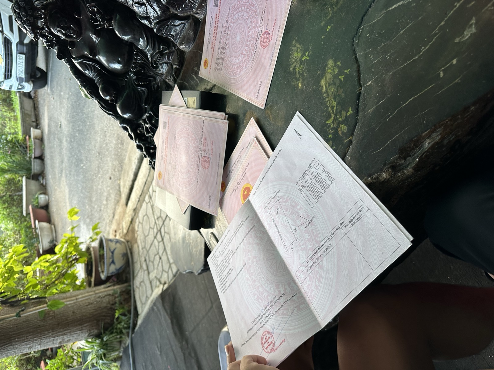

Điểm tin BĐS Khánh Hoà tuần 5–11/10: sáu tin đáng để ý
Ngân hàng Nhà nước nói lãi suất "đang tăng chậm lại", nhưng chính một chủ đầu tư lớn lại phải nâng mức hỗ trợ lãi cho khách mua nhà. Tỉnh lần đầu công bố đủ danh sách 18 dự án đổi đất lấy hạ tầng đang vướng. Ba phiên đấu giá/phát mại vẫn đi theo một chiều: hạ giá. Và có thêm một đường dây điện cao áp, hai dự thảo luật đáng theo dõi từ tuần sau. Sáu tin của tuần, mỗi tin kèm một câu: nghĩa là gì với người đang cầm tiền hoặc cầm đất.

Ảnh tư liệu. Mỗi sáng tôi đọc tin thị trường rồi gửi khách. Cuối tuần tôi gom lại những tin thật sự chạm vào túi tiền.
Mỗi sáng tôi đọc tin thị trường rồi gửi bản tóm tắt cho khách qua Zalo. Cuối tuần tôi gom lại những tin đáng để ý nhất, kèm một câu: điều này nghĩa là gì với người đang cầm tiền hoặc cầm đất.
1. ⭐⭐ Lãi suất "tăng chậm lại" theo lời nói, nhưng Vinhomes tự nâng mức hỗ trợ lãi 6% lên 9%
Họp báo 7/10, Ngân hàng Nhà nước nói lãi suất "đang tăng chậm lại", yêu cầu các ngân hàng giảm lãi huy động kỳ hạn từ 6 tháng, lãi vay bình quân khoản mới là 6,35% (tính đến 20/9). Cùng lúc, liên ngân hàng qua đêm giảm mạnh từ 2,8% xuống 0,6% chỉ trong ba phiên (5–7/10) nhờ Ngân hàng Nhà nước hút ròng gần 39.000 tỷ qua OMO. Nhưng đến ngày 9/10, lãi huy động 12 tháng ở các ngân hàng vẫn 3,7–7,5%, Big4 6,8%, có 10/35 ngân hàng từ 7% — tiền rẻ liên ngân hàng chưa truyền sang huy động. Và ngay ngày 11/10, Vinhomes công bố nâng trần hỗ trợ lãi cho người mua nhà từ 6% (hồi tháng 4) lên 9%/năm, áp dụng 5 năm cho khoản vay đến 70% giá trị căn nhà.
Nghĩa là gì: một chủ đầu tư không tự nâng ưu đãi nếu lãi thị trường đang rẻ đi. Việc Vinhomes phải bù thêm 3 điểm phần trăm là tín hiệu ngược với lời "tăng chậm lại" — mặt bằng lãi vay thực tế vẫn ở vùng cao. Khi tính bài toán trả góp, cứ lấy mức lãi sau ưu đãi của chính hợp đồng, không lấy lãi năm đầu làm chuẩn (nguồn: VnExpress 7/10 và 10/10; CafeF 8/10 và 9/10).
2. ⭐⭐ Lần đầu có đủ danh sách 18 dự án đổi đất lấy hạ tầng (BT) đang vướng
Họp UBND tỉnh ngày 8/10: trong 257 dự án vướng mắc, tỉnh đã gỡ 106, còn 151, trong đó có 18 dự án hình thức BT chia bốn nhóm. Đáng chú ý: nhóm đổi quỹ đất có tuyến đường N9 (bắc Trần Phú, nối Ngô Gia Tự – Lê Duẩn) với khoảng 101 lô đã bán sang tay cho người mua thứ cấp — khó thu hồi. Một nhóm khác là ba dự án của Phúc Sơn đổi bằng đất sân bay Nha Trang cũ, nhưng Bộ Quốc phòng chưa bàn giao đất. Tuyến tây bán đảo Bắc Cam Ranh thuộc nhóm có thể bị dừng hợp đồng theo nghị quyết mới.
Nghĩa là gì: nếu đang cầm hoặc định mua một lô đất có nguồn gốc từ đổi đất BT — đặc biệt khu vực đường N9 bắc Trần Phú — nên hỏi kỹ về tình trạng pháp lý gốc, vì tỉnh đang siết lại các dự án này và một số có thể bị xử lý lại dù đã qua nhiều lớp chuyển nhượng (nguồn: Thanh Niên 8/10).
3. Ba phiên đấu giá/phát mại tháng 10 — vẫn một chiều hạ giá
Thửa 350 (tờ 41) Bắc Nha Trang đấu ngày 9/10, khởi điểm 6,787 tỷ — đến sáng 11/10 báo chí vẫn chưa đưa kết quả. Thửa 217 ở Cam Lâm, sau khi phiên 28/9 không thành, đấu lại ngày 23/10 với giá khởi điểm hạ đúng 10%, từ 1,889 tỷ xuống 1,7 tỷ. Thửa 365 (tờ 28) cũng ở Bắc Nha Trang đấu ngày 26/10, khởi điểm 2,606 tỷ, tiền cọc 520 triệu.
Nghĩa là gì: ba tài sản công khai giá khởi điểm mà vẫn phải rao nhiều lần, có tài sản phải hạ giá mới đấu lại được, là tín hiệu thanh khoản đáng tin hơn mọi lời rao "khu này đang sốt". Người mua đang có thời gian — nhưng nhớ đọc kỹ quy chế đấu giá (tiền đặt trước, hiện trạng bàn giao, ai chịu thuế) trước khi đọc giá, như tôi đã viết ở bài ba phiên đấu giá lớn tháng 10 (nguồn: Báo Đấu thầu; CafeF 8/10 và 9/10).
4. Thêm một hành lang điện 220kV ở Bắc Nha Trang — thêm một câu phải hỏi
Hành lang đường dây 220kV Krông Búk – Nha Trang mạch 2 hạn chế sử dụng đất trên diện tích 176.779,5 m² (~17,68 ha) tại phường Bắc Nha Trang, áp dụng 12 tháng từ thông báo ngày 5/8/2026, chủ đầu tư là Tổng công ty Truyền tải điện Quốc gia (EVNNPT). Trung tâm Phát triển quỹ đất tỉnh lo phần bồi thường.
Nghĩa là gì: ai đang xem đất ở Bắc Nha Trang nên thêm câu hỏi "lô này có nằm trong hành lang lưới điện cao áp không" vào danh sách kiểm tra, cạnh câu lộ giới và quy hoạch — hành lang an toàn lưới điện hạn chế xây dựng chứ không cấm tuyệt đối, nhưng ảnh hưởng trực tiếp đến thiết kế và giá trị sử dụng (nguồn: Tuổi Trẻ 9/10).
5. Dự thảo Luật Đất đai: thêm 3 trường hợp Nhà nước thu hồi đất
Trình Quốc hội tại kỳ họp khai mạc 17/10, dự thảo bổ sung vào 32 trường hợp thu hồi đất hiện hành ba trường hợp mới: thực hiện điều ước quốc tế; dự án nhà ở công vụ, nhà ở cho thuê, nhà ở chính sách; và trung tâm logistics cảng biển, cảng hàng không, cảng thủy nội địa trên 50 ha.
Nghĩa là gì: ai có đất vườn, đất nông nghiệp quanh khu vực cảng Cam Ranh – Ba Ngòi, Khu kinh tế Vân Phong hay sân bay Cam Ranh nên theo dõi kỳ họp này — phạm vi đất có thể bị thu hồi để làm logistics cảng đang được mở rộng, và mức bồi thường sẽ theo khung giá đất, không theo giá thị trường (nguồn: VnExpress 1/10, nhắc lại vì liên quan trực tiếp đến kỳ họp 17/10).
6. Dự thảo thuế 0,2%/năm với đất bỏ hoang — cùng kỳ họp 17/10
Cũng trình Quốc hội đợt này: mức thuế 0,2%/năm, không phân theo hạn mức — gấp khoảng 7 lần mức 0,03% áp cho đất trong hạn mức — với đất được xác định "bỏ hoang, chậm đưa vào sử dụng". Luật Đất đai 2024 hiện chưa định nghĩa rõ thế nào là "bỏ hoang". Nếu được thông qua, dự kiến hiệu lực từ 1/1/2027.
Nghĩa là gì: người đang giữ đất trống chờ giá lên nên tính thêm một dòng chi phí mới vào bài toán hằng năm, không chỉ tính lãi vay. Đây còn là dự thảo, chưa thông qua — tôi sẽ viết riêng bảng tính chi phí giữ đất vào thứ Hai tuần sau, ngay khi Quốc hội khai mạc.
Điều tôi để ý nhất tuần này
Ba mạch tin tuần này cùng chỉ về một hướng: lãi suất nói giảm mà chủ đầu tư phải tự bù thêm, ba phiên đấu giá vẫn phải hạ giá mới có người đấu, và khung pháp lý đang được siết chặt hơn ở cả ba lớp — hành lang điện, diện thu hồi đất, và sắp tới là thuế đất bỏ hoang. Thị trường không ồn ào, nhưng đang được dọn lại kỹ hơn trước khi có đợt hàng mới. Với người cầm tiền, đây là lúc để hỏi kỹ hơn, không phải lúc để vội.
Bản tin tổng hợp từ các nguồn báo chí trong tuần 5–11/10/2026 mà tôi đọc và gửi khách hằng ngày. Đây là tin tổng hợp, không phải văn bản gốc. Trước khi dùng bất kỳ con số nào để ra quyết định, anh/chị nên kiểm chứng lại tại nguồn chính thức.
"Rồi, ngày mới tốt lành nhé."
Muốn nhận bản tin này mỗi sáng 7h?
Tôi đọc tin thị trường mỗi sáng rồi gửi bản tóm tắt cho khách qua Zalo, có ghi nguồn và nói rõ chỗ nào số liệu đang vênh. Nhắn "BẢN TIN" để nhận miễn phí.
Nhắn Zalo — 0869 668 638